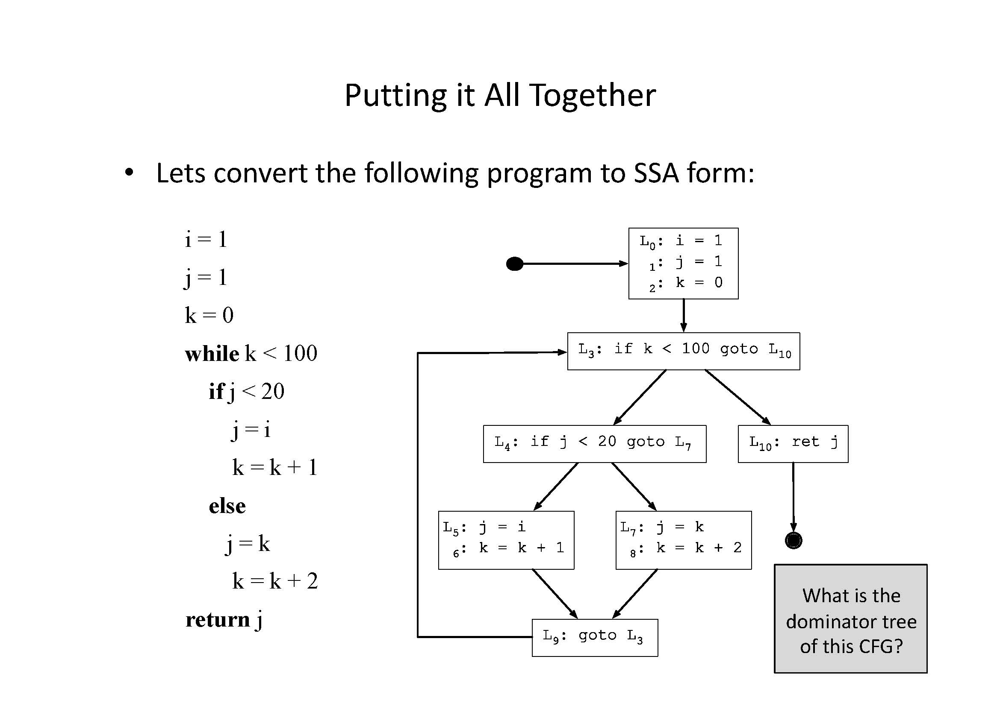
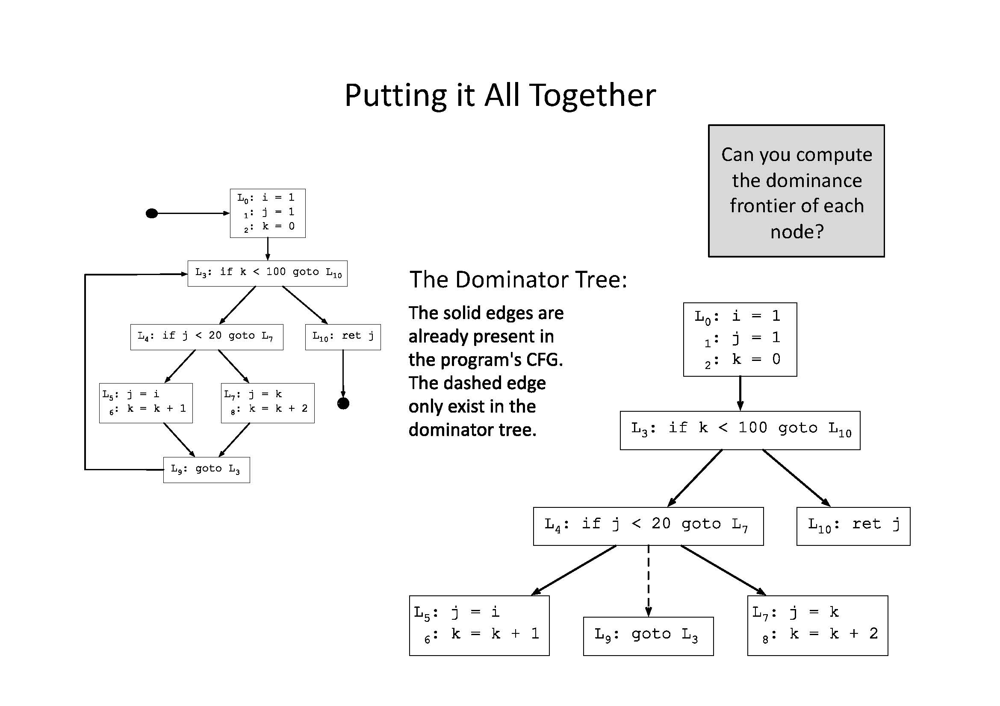
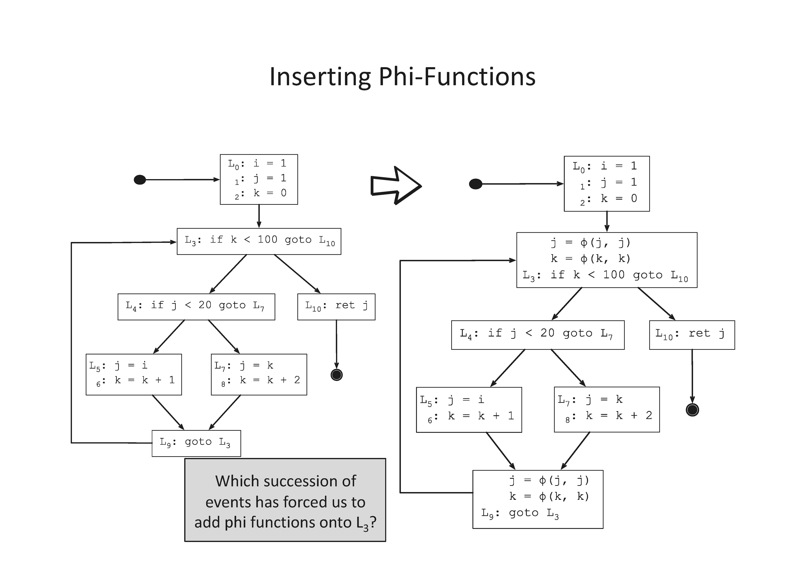
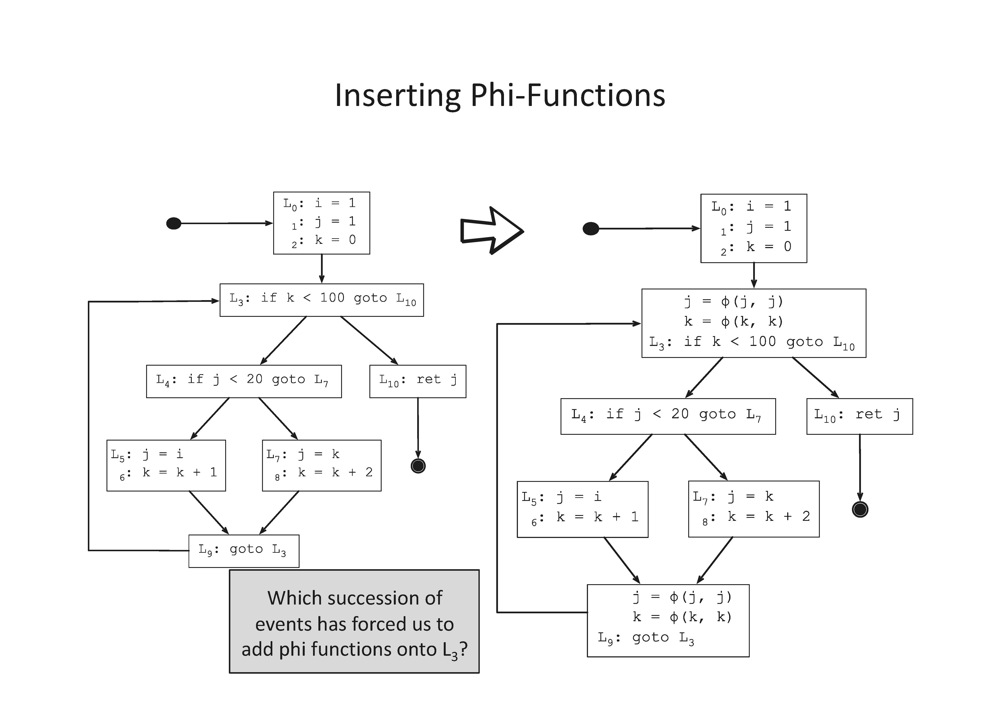
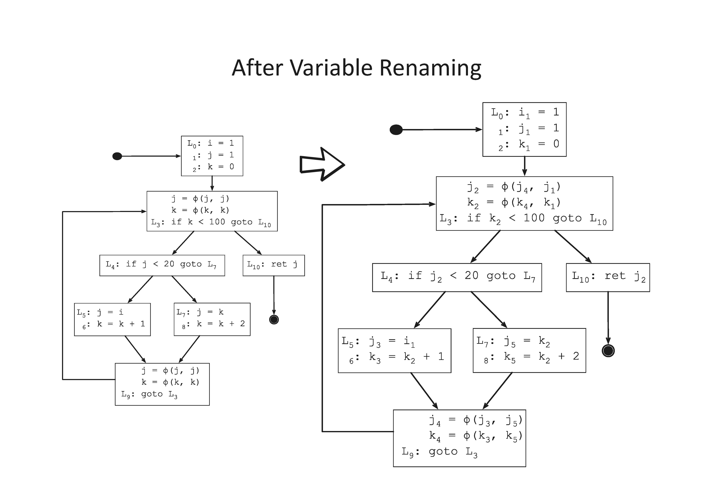
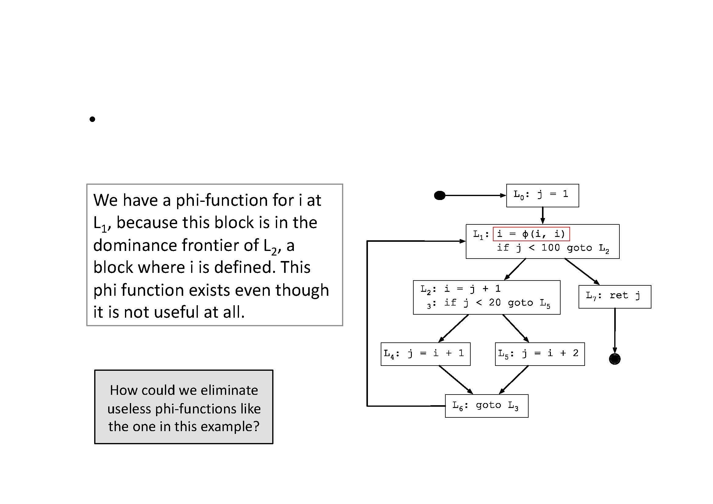

graph TD
B0["0: i = 0
1: s = 0"]
B1["2: x = m
3: s = s + x
4: i = i +4
5: if i < n go to B0"]
B0 --> B1
B1 --> B1
6 Static single Assignment
Static single assignment (SSA)
A variable in a program can have multiple definitions. In Bril definitions are instructions which compute values. Up till now we have been thinking about analysis which look at variables (names) but a different way to look at this is based on values, If we think of instructions calculating values, and uses being uses of values we can picture a graph called the data flow graph showing how values move through a program
in SSA we change our IR so that every variable has exactly one definition in the program (each variable is assigned only once). The name SSA is statically there is only a single assignment per variable.
The SSA Philosophy
In addition to a language form, SSA is also a philosophy! It can fundamentally change the way you think about programs. In the SSA philosophy:
- definitions == variables
- instructions == values
- arguments == data flow graph edges
In LLVM, for example, instructions do not refer to argument variables by name—an argument is a pointer to defining instruction.
Static means in the text, not in the execution.
variable i has two static assignments 1 and 4, so this program is not in SSA
Variable s has two static assignments, x has one static assignment but x has lots of dynamic assignments (when the program executes)
We call a program without branches a piece of *** straightline code***.
@main {
a: int = const 4;
b: int = const 2;
a: int = add a b;
b: int = add a b;
print b;
}Its easy to see how to convert straight line code into ssa
@main {
a.1: int = const 4;
b.1: int = const 2;
a.2: int = add a.1 b.1;
b.2: int = add a.2 b.1;
print b.2;
}for each variable a:
Count[a] = 0
Stack[a] = [0]
rename_basic_block(B):
for each instruction S in block B:
for each use of a variable x in S:
i = top(Stack[x])
replace the use of x with xi for each variable a that S defines count[a] = Count[a] + 1
i = Count[a]
push i onto Stack[a]
replace definition of a with ai We don’t need the stack here but we will need it later.
Of course, things will get a little more complicated when there is control flow. And because real machines are not SSA, using separate variables (i.e., memory locations and registers) for everything is bound to be inefficient.
The idea in SSA is to convert general programs into SSA form, do all our optimization there, and then convert back to a standard mutating form before we generate backend code.
ϕ-Nodes
Just renaming assignments willy-nilly will quickly run into problems. Consider this program:
graph TB
B0[".b0
a: int = const 47;
br cond .left .right;"]
left["a: int = add a a;
jmp .exit;"]
right["a: int = mul a a;
jmp .exit;"]
exit["print a;"]
B0 --> left
B0 --> right
left --> exit
right --> exit
If we start renaming all the occurrences of a, everything goes fine until we try to write that last print a. Which “version” of a should it use?
To match the expressiveness of unrestricted programs, SSA adds a new kind of instruction: a ϕ-node. ϕ-nodes are flow-sensitive copy instructions: they get a value from one of several variables, depending on which incoming CFG edge was most recently taken to get to them.
In Bril, a ϕ-node appears as a phi instruction:
a.4: int = phi .left a.2 .right a.3;The phi instruction chooses between any number of variables, and it picks between them based on labels. If the program most recently executed a basic block with the given label, then the phi instruction takes its value from the corresponding variable.
You can write the above program in SSA like this:
@main(cond: bool) {
.entry:
a.1: int = const 47;
br cond .left .right;
.left:
a.2: int = add a.1 a.1;
jmp .exit;
.right:
a.3: int = mul a.1 a.1;
jmp .exit;
.exit:
a.4: int = phi .left a.2 .right a.3;
print a.4;
}Bril in SSA
Bril has an SSA extension It adds support for a phi instruction. Beyond that, SSA form is just a restriction on the normal expressiveness of Bril—if you solemnly promise never to assign statically to the same variable twice, you are writing “SSA Bril.”
The reference interpreter has built-in support for phi, so you can execute your SSA-form Bril programs without fuss.
Getting out of ssa
Compilers that use the SSA form usually contain a step, before the generation of actual assembly code, in which phi functions are replaced by ordinary instructions. Normally these instructions are simple copies.
graph TD;
subgraph a;
A0["io =
j0 =
k0 ="]
A1["i1 =
j1 =
k1 = "]
A2["i2 = phi(i0, i1
j2 = phi(j0, j1)
k2 = phi(k0, k1)
...
= i2
= j2
= k2"]
A0 --> A2
A1--> A2
end
subgraph b;
B0["io =
j0 =
k0 ="]
B1["i1 =
j1 =
k1 = "]
B2["
...
= i2
= j2
= k2"]
B0 --"i2 = i0
j2 = j0
k2 = k0"--> B2
B1 --"i2 = i1
j2 = j1
k2 = k1"--> B2
end
graph TB A0["L1 a0 = b0 = if A0 > b0"] A1["b1 = a0"] A2["l2 b2 = phi(b1,b0)"] A0 --> A1 A1--> A2 A0 --> A2
where do we put the copy b2 = b0?
The placement of the copy b2 = b0 is not simple, because the edge that links L2 to L5 is critical. A critical edge connects a block with multiple successors to a block with multiple predecessors.
We can solve this problem by doing critical edge splitting. This CFG transformation consists in adding an empty basic block (empty, except by – perhaps – a goto statement) between each pair of blocks connected by a critical edge.
Converting to SSA
Very simple scheme
graph TB X["Block X a = b = if s > b"] Y["Block Y b = a"] Z["Block Z ret b"] X--> Y Y--> Z X --> Z
There should be a phi-function for variable b at node z of the flow graph exactly when all of the following are true:
- There is a block x containing a definition of b
- There is a block y (with y ≠ x) containing a definition of b
- There is a nonempty path Pxz of edges from x to z
- There is a nonempty path Pyz of edges from y to z
- Paths Pxz and Pyz do not have any node in common other than z, and…
- The node z does not appear within both Pxz and Pyz prior to the end, though it may appear in one or the other.
this is iterative since when we add a phi, we are creating a new defintion, which may add new phi-functions
When we find nodes X,Y,Z that match these steps and z does not contain a phi function for b, insert a phi
While really expensive this will work
To convert to SSA, we want to insert ϕ-nodes whenever there are distinct paths containing distinct definitions of a variable. We don’t need ϕ-nodes in places that are dominated by a definition of the variable. So what’s a way to know when control reachable from a definition is not dominated by that definition? The dominance frontier!
This is going to be almost linear
We do it in two steps. 1) insert ϕ-nodes: 1) rename variables:
graph TB a-->b a--> e a--> i b-->c c--- c c--> d e--> f["f x = "] e--> g g--> h f--> h h-->l f--> d h--> e i--> k i--> j j--> k k--> l d--> l
We need phi functions for x in d and h, where else?
we need to iterate and keep adding phi nodes
for each node in the cfg
for each variable with a def in node
add node to Defs[v] # Blocks where v is assigned.
for each v in vars:
W = Defs[v]
while W is not empty
remove a node n from w
for block in DF[d]: # Dominance frontier.
Add a ϕ-node to block,
unless we have done so already.
Add block to W (because it now writes to v!),
unless it's already in there.Since we keep adding nodes to W how do we know this terminates?
Then, rename variables:
rename(n):
rename_basic_block(n) # from before
for each successor Y of n, where n is the jth pred of Y
for each phi-function f in Y where the operand of f is 'a'
i = top(stack[a])
replace jth operand wit a_i
for each child of X of n (in the dominator tree)
rename(X)
for each instruction S in n
pop stack(S.dest)
   

The arity of phi-functions
Could we have a phi-function in a node with only one predecessor?
could we have a phi-function wit more then two arguments?

This algorithm computes what is called minimal SSA form which is not so mimimal since it can leave dead assignments

i is only live in blocks l2 and l4 so no need to add phi-node at l1, this gives us pruned ssa form
making use of ssa form
Our previous analyses always used a (variable, program point), but in ssa these are the same
dead code elimination in ssa
while there is some variable v with no uses and the statement that defines v has no other side effects, delete the statement that defines v from the program.
we need a counter for each variable (or each instruction)
walk the program once increment the counter each time the variable is used
while there exists v, such that counter[v] = 0 remove the instruction that defined v, e.g., “v = E for each variable x used in E decrement counter[x]
sparse constant prop
we define a partial order on consts, any > all constants > undefined and define the intersection of two states as the common parent
with each variable we have an abstract state (like a value number)
v = const c ==> v state is const
v = id q ==> v state is the state of q
v = v0 op v1 ==> if both are constants v = c0 op c1
==> if one is any, v's state is >
v = phi(v0,..vn) ==> v's state is the intersection of the states of v0,..,vnWhat order do we process nodes? because the program is in ssa form we can do the nodes in dominator tree order, then before processing any instruction that is not a phi, we will have processed all the arguments
B0: x = input
a = 1
c = a +10
if a < c go to b1
B1: b = x * a
print b
a = a +1
go to b1
in ssa form
B0: x0 = input
a0 = 1
c0 = a0 +10
if a0 < c0 go to b1
B1: a1 phi(a1,a2 )
b0 = x0 * a1
print b0
a2 = a1 +1
go to b1
walking the dominator tree b0 -> b1
B0:
x0 - any
a0 - 1
c0 - 11 (folding the constant)
a0 < c0 skip
B1:
a1 = 1 (only one input of phi is defined)
b0 = any
a2 = 2
update the uses of a2 - which is the phi a1 -> any
update the uses of a1 which is the increment no change
## liveness


### Converting from SSA
Eventually, we need to convert *out of* SSA form to generate efficient code for real machines that don't have `phi`-nodes and do have finite space for variable storage.
The basic algorithm is pretty straightforward.
If you have a ϕ-node:
v = phi .l1 x .l2 y;
Then there must be assignments to `x` and `y` (recursively) preceding this statement in the CFG.
The paths from `x` to the `phi`-containing block and from `y` to the same block must "converge" at that block.
So insert code into the `phi`-containing block's immediate predecessors along each of those two paths:
one that does `v = id x` and one that does `v = id y`.
Then you can delete the `phi` instruction.
This basic approach can introduce some redundant copying.
(Take a look at the code it generates after you implement it!)
Non-SSA copy propagation optimization can work well as a post-processing step.
For a more extensive take on how to translate out of SSA efficiently, see [“Revisiting Out-of-SSA Translation for Correctness, Code Quality, and Efficiency” by Boissinot et al.](https://hal.inria.fr/inria-00349925v1/document)
its possible that an optimization can give overlapping phi-functionsb0 x = 1 y = 2 B1 z = x x = y y = z if() go to b1
in ssa form
b0 x1 = 1 y1 = 2 B1 x2 = phi(x1,x3) y2 = phi(y1, y3) z = x2 x3 = y2 y3= z if() go to b1 ’’’’
optimze it
``` b0 x1 = 1 y1 = 2 B1 x2 = phi(x1, y2) y2 = phi(y1, x2) if() go to b1 ’’’’
lost the temp (this is called the swap problem) if we add copies x2 = y3 y2 = x2 (uses the wrong value of x2)
Some SSA slides from Todd Mowry at CMU